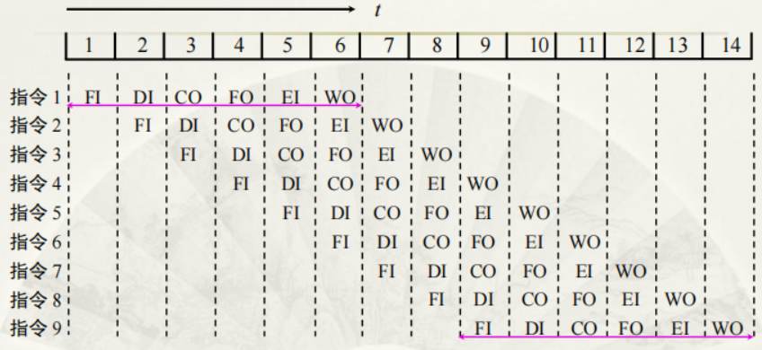

计算机组成原理第8章：CPU的结构和功能
1 CPU的结构
1.1 CPU的功能
CPU实质包括运算器和控制器两大部分。控制器负责协调并控制计算机各部件执行程序的指令序列，其基本功能是取指令、分析指令和执行指令。
简述CPU的功能如下：
- CPU具有控制程序的顺序执行，即指令控制
- 产生完成每条指令所需的控制命令，即操作控制
- 对各种操作实施时间上的控制，即时间控制
- 对操作数进行算术运算和逻辑运算，即数据加工
- 处理中断
1.2 CPU的结构框图
指令控制需要：寄存器、控制单元CU；数据加工需要：ALU；中断控制需要：中断系统。此外，还需要系统总线，即控制总线、地址总线和数据总线。
1.3 CPU的寄存器
CPU的寄存器大致可分为两类：
- 一类属于用户可见寄存器，用户可以这类寄存器编程。
- 另一类属于控制和状态寄存器，用户不可对这类寄存器编程，它们被控制部件使用，以控制CPU的操作。
1.3.1 用户可见寄存器
- 通用寄存器：可由程序设计者指定许多功能，可用于存放操作数，也可作为满足某种寻址方式所需的寄存器。
- 数据寄存器：用于存放操作数。
- 地址寄存器：用于存放地址，其位数应满足最大的地址范围。
- 条件码寄存器：存放条件码，可作程序分支的依据，例如正、负、零、溢出、进位等。
1.3.2 控制和状态寄存器
CPU中还有一类寄存器用于控制CPU的操作或运算，如以下四种寄存器：
- MAR：存储器地址寄存器，用于存放将被访问的存储单元的地址
- MDR：存储器数据寄存器，用于存放欲存入存储器中的数据或最近从存储器中读出的数据
- PC：程序计数器，存放现行指令的地址，通常具有计数功能
- IR：指令寄存器，存放当前欲执行的指令
1.4 控制单元 CU 和中断系统
控制单元（CU）是提供完成计算机全部指令操作的微操作命令序列部件。微操作命令序列的形成方法有两种：
- 组合逻辑设计方法
- 微程序设计方法
中断系统主要用于处理计算机的各种中断。
2 指令周期
2.1 基本概念
CPU每取出并执行一条指令所需的全部时间称为指令周期。由于各种指令操作功能不同，因此各种指令的指令周期是不相同的。
一个完整的指令周期应包括取值、间址、执行和中断4个子周期。
设置CPU工作周期标志触发器对设计控制单元十分有利。
2.2 指令周期的数据流
2.2.1 取值周期数据流
PC中存放现行指令的地址，该地址送到MAR并送至地址总线，然后由控制部件CU向存储器发读命令，使对应MAR所指单元的内容（指令）经数据总线送至MDR，再送至IR，并且CU控制PC内容加1，形成下一条指令的地址。
2.2.2 间址周期数据流
一旦取指周期结束，CU便检查IR中的内容，以确定其是否有间址操作，如果需要间址操作，则MDR中指示形式地址的右N位（记作）将被送到MAR，又送至地址总线，此后CU向存储器发读命令，以获得有效地址并存至MDR。
2.2.3 执行周期的数据流
由于不同的指令在执行周期的操作不同，因此执行周期的数据流是多种多样的，可能涉及CPU内部寄存器间的数据传送、对存储器（或I/O）进行读写操作或对ALU的操作。
2.2.4 中断周期的数据流
CPU进入中断周期要完成一系列操作，其中PC当前的内容必须保存起来，以待执行完中断服务程序后可以准确返回到该程序的间断处。
CU把用于保存程序断点的存储器特殊地址送往MAR，并送到地址总线上，然后由CU向存储器发写命令，并将PC的内容（程序断点）送到MDR，最终使程序断点经数据总线存入存储器。
此外，CU还需将中断服务程序的入口地址送至PC，为下一个指令周期的取指周期做好准备。
3 指令流水
如何提高机器速度？
- 提高访存速度：高速芯片、Cache、多体并行
- 提高 I/O 和主机之间的传送速度：中断、DMA、通道、I/O 处理机、多总线
- 提高运算器速度：高速芯片、改进算法、快速进位链
- 提高整机处理能力：高速器件、改进系统结构 ，开发系统的并行性
所谓并行，包含同时性和并发性两个方面。
- 同时性：两个或两个以上事件在同一时刻发生
- 并发性：两个或两个以上事件在同一时间段发生
3.1 指令流水原理
为了进一步提高处理速度，可将指令的处理过程分解为更细的几个阶段：
- 取值（FI）：从存储器取出一条指令并暂时存入指令部件的缓冲区
- 指令译码（DI）：确定操作性质和操作输地址的形成方式
- 计算操作数地址（CO）：计算操作数的有效地址
- 取操作数（FO）：从存储器中取操作数（若操作数在寄存器中，则无需此操作）
- 执行指令（EI）：执行指令所需的操作，并将结果存于目的寄存器
- 写操作数（WO）：将结果存入存储器

3.2 影响指令流水线性能的因素
流水线在流动过程中通常会出现三种相关，即结构相关、数据相关和控制相关。
3.2.1 结构相关
结构相关是当指令在重叠执行过程中，不同指令争用同一功能部件产生资源冲突时产生的，故又有资源相关之称。
解决方法：
- 暂停一个时钟周期
- 设置两个独立的存储器分别存放操作数和指令，以免取指令和取操作数同时进行时互相冲突
3.2.2 数据相关
数据相关是流水线中的各条指令因重叠操作，可能改变对操作数的读写访问顺序，从而导致了数据相关冲突。
解决方法：
- 后推法：遇到数据相关时，停顿后续指令的运行，直到前面指令的结果已经生成
- 数据旁路：直接将执行结果送到其他指令所需要的地方
3.2.3 控制相关
控制相关主要是由转移指令引起的。可以采用尽早判别转移是否发生，尽早生成转移目标地址；
3.3 流水线性能
流水线性能通常用吞吐率、加速比和效率3项指标来衡量。
3.3.1 吞吐率
吞吐率是指在单位时间内流水线所完成指令或输出结果的数量，又分为最大吞吐率和实际吞吐率。
最大吞吐率是指流水线在连续流动达到稳定状态后所获得的吞吐率，对于段的指令流水线而言，若各段的时间均为，则最大吞吐率为：
实际吞吐率是指流水线完成条指令的实际吞吐率，故实际吞吐率的计算公式为：
3.3.2 加速比
加速比是指段的流水线的速度与等功能的非流水线的速度之比，加速比的计算公式如下：
3.3.3 效率
效率是指流水线中各功能段的利用率。因为流水线有建立时间和排空时间，因此各功能段的设备不可能一直处于工作状态，总有一段空闲时间。通常用流水线各段处于工作时间的时空区与流水线中各段总的时空区纸币来衡量流水线的效率。用公式表示为：
3.4 流水线的多发技术
为了进一步发展，还可开发流水线中的多发技术，设法在一个时钟周期（机器主频的到数）内产生更多条指令的结果。
常见的多发技术有超标量技术、超流水线技术和超长指令字技术。
3.4.1 超标量技术
超标量技术是指每个时钟周期内可并发多条独立指令，即以并行操作方式将两条或两条以上的指令编译执行。
超标量计算机不能重新安排指令的执行顺序，但可以通过编译优化技术，在高级语言翻译成机器语言时精心安排，把能并行执行的指令搭配起来，挖掘更多的指令并行性。
3.4.2 超流水线技术
超流水线技术是将一些流水线寄存器插入流水线段中，好比将流水线再分段。
3.4.3 超长指令字技术
超长指令字技术是由编译程序挖掘出指令间潜在的并行性后，将多条能并行操作的指令组合成一条具有多个操作码字段的超长指令字（可达几百位）。

超长指令字较超标量具有更高的并行处理能力，但对优化编译器的要求更高，对Cache的容量要求更大。
4 中断系统
为了处理各种中断，CPU内通常设有处理中断的机构——中断系统，以解决各种中断的共性问题。
引起中断的各种因素如下：
- 人为设置的中断：一般称为自愿中断
- 程序性事故：如定点溢出、浮点溢出等，属于由程序设计不周而引起的 中断
- 硬件故障
- I/O设备
- 外部事件：例如键盘输入
中断源可分两大类：不可屏蔽中断和可屏蔽中断。
中断系统需要解决的问题：
- 各中断源如何向 CPU** 提出请求**？
- 各中断源同时提出请求怎么办 ？
- CPU什么条件、什么时间、以什么方式响应中断？
- 如何保护现场？
- 如何寻找入口地址？
- 如何恢复现场，如何返回？
- 处理中断的过程中又出现新的中断怎么办？
4.1 中断请求标记和中断判优逻辑
4.1.1 中断请求标记
为了判断是哪个中断源提出请求，在中断系统中必须设置中断请求标记触发器，简称中断请求触发器，记作INTR。多个INTR可以组成中断请求标记寄存器。
尽管中断请求标记寄存器是由各中断触发器组成的，但这些触发器可以集中在CPU的中断系统内，也可以分散到各个中断源。
4.1.2 中断判优逻辑
当某一个时刻有多个中断源提出中断请求时，中断系统必须按其优先顺序予以响应，这称为中断判优。
4.1.2.1 硬件排队
分为两种，一种是链式排队器，对应中断请求触发器分散在各个接口电路中的情况。
另一种排队器设在CPU内，如下图所示：
4.1.2.2 软件排队
软件排队通过编写查询程序实现的，程序按一下逻辑从高至低逐级查询各中断源是否有中断请求，这样可以保证CPU首先响应级别高的中断源的请求。
4.2 中断服务程序入口地址的寻找
4.2.1 硬件向量法
硬件向量法就是利用硬件产生向量地址，再由向量地址找到中断服务程序的入口地址。

4.2.2 软件查询法
用软件寻找中断服务程序入口地址的方法称为软件查询法。当查到某一中断源有中断请求时，接着安排一条转移指令，直接指向此中断源的中断服务程序入口地址。
4.3 中断响应
4.3.1 响应中断的条件
CPU响应I/O中断的条件是允许中断触发器必须为“1”。在中断系统中有一个允许中断触发器EINT，它可被开中断指令置“1”，也可被关中断指令置“0”。即只有当并且有中断请求时，CPU可以响应中断。
4.3.2 响应中断的时间
在指令执行周期结束后，若有中断，CPU则进入中断周期；若无中断，则进入下一条指令的取值周期。
4.3.3 中断隐指令
CPU响应中断后，即进入中断周期。在中断周期内，CPU要自动完成一系列操作，具体如下：
- 保护程序断点：将PC的内容保存到存储器中，可以存在特定单元（0号地址），也可以存入堆栈
- 寻找中断服务程序的入口地址：有硬件向量法和软件查询法两种
- 关中断：INT为状态“1”，同时
4.4 保护现场和恢复现场
保护现场应该包括保护程序断点和保护CPU内部寄存器内容的现场两个方面。
恢复现场是指在中断返回前，必须将寄存器的内容恢复到中断处理前的状态，这部分工作也由中断服务程序完成。
4.5 中断屏蔽技术
4.5.1 多重中断
CPU正在执行某个中断服务程序时，另一个中断源又提出了新的中断请求，而CPU又响应了这个新的请求，暂时停止正在运行的服务程序，这称为多重中断。
实现多重中断的条件：
- 提前设置“开中断”指令
- 优先级别高的中断源有权中断优先级别低的中断源
4.5.2 屏蔽技术
4.5.2.1 屏蔽触发器与屏蔽字
当该中断源被屏蔽时（），此时即使，中断查询信号到来时刻只能将，CPU接收不到该中断源的中断请求，即它被屏蔽。
如果排队器集中设在CPU内，加上屏蔽条件，就可组成具有屏蔽功能的排队器，如下图所示：
显然，对应每个中断请求触发器就有一个屏蔽触发器，将所有的屏蔽触发器组合在一起，便构成一个屏蔽寄存器，屏蔽寄存器的内容称为屏蔽字。下图是16个中断源的优先级按照降序排序：
在中断服务程序中设置适当的屏蔽字，能起到对优先级别不同的中断源的屏蔽作用。
4.5.2.2 屏蔽技术可改变优先等级
优先级包含响应优先级和处理优先级。响应优先级是指CPU响应各中断源请求的优先次序，这种次序往往是硬件线路已设置好的，不便于改动。处理优先级是指CPU实际对各中断源请求的处理优先次序。
如果不采用屏蔽技术，响应的优先次序就是处理的优先次序。采用了屏蔽技术之后，可以改变各中断源的优先等级，从而改变CPU执行程序的轨迹。
CPU 执行程序轨迹（原屏蔽字）

CPU 执行程序轨迹（新屏蔽字）
在不改变CPU响应中断的次序下，通过改变屏蔽字可以改变CPU处理中断的次序。
4.5.3 多重中断的断点保护
中断系统对断点的保存都是在中断周期内由中断隐指令实现的，对用户是透明的。断点可以保存在堆栈内，也可保存在特定的存储单元内。
 微信
微信 支付宝
支付宝